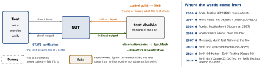

testing · folio
In one line: A test double (Gerard Meszaros, xUnit Test Patterns, 2007; Fowler: “think stunt double”) replaces a DOC (depended-on component) so the SUT can be tested alone. The five differ in what they do with the SUT’s indirect inputs (what the DOC returns or throws) and indirect outputs (the calls the SUT makes): a Stub feeds inputs, a Spy records outputs for the test to check, a Mock checks outputs itself, a Fake is a lighter working implementation, a Dummy is never called.
Download PDF Print view LaTeX source


Meszaros’ roles
| purpose | indirect input | indirect output | test supplies | e.g. | |
|---|---|---|---|---|---|
| Dummy | fill a parameter or attribute | never called | never called | nothing | nil, “ignored” |
| Stub | verify indirect inputs | injects | ignores | inputs | canned reply, error |
| Spy | verify indirect outputs | optional | captures for later | inputs (opt.) | call log |
| Mock | verify indirect outputs | optional | verifies vs expectations | outputs + inputs (opt.) | expected calls |
| Fake | run tests that can’t run, or faster | no | uses them | nothing | in-memory database |
Fowler: only mocks insist on behaviour verification; the others can, and usually do, verify state.
Variations
- Stub: Responder (valid inputs, happy path) · Saboteur (errors, exceptions) · Temporary Test Stub (the DOC is not written yet) · Entity Chain Snipping (one object replaces a network of them).
- Spy: exposes its log through a Retrieval Interface. Mock: an unexpected call or wrong argument fails the test immediately, so the test may need no assertion; strict also fails on out-of-order calls, lenient (“nice”) tolerates them.
- Fake: Fake Database (not a database at all) · In-Memory Database (a real one, in RAM) · Fake Web Service · Fake Service Layer.
- Dummy should throw if called; a Null Object is called and does nothing.
- Built by hand, dynamically generated at run time (jMock) or statically generated as source compiled with the tests. Hard-coded (fixed when written) or configurable (programmed by the test). Self Shunt: the test class itself is the double.
One protocol, five doubles (Swift Testing)
protocol Mailer { func send(to: String) -> Bool }
struct DummyMailer: Mailer { // never to be called
func send(to: String) -> Bool {
Issue.record("dummy called"); return false } }
struct StubMailer: Mailer { // control point
var result: Bool
func send(to: String) -> Bool { result } }
final class SpyMailer: Mailer { // observation point
private(set) var sent: [String] = []
func send(to: String) -> Bool { sent.append(to); return true } }
final class MockMailer: Mailer { // strict: order counts
private var expected: [String]
init(expect: [String]) { expected = expect }
func send(to: String) -> Bool {
guard expected.first == to else { // fails AT the call
Issue.record("unexpected send(to: \(to))"); return false }
expected.removeFirst(); return true }
func verify() { #expect(expected.isEmpty) } } // none missing
final class FakeMailer: Mailer { // works, no SMTP
private(set) var outbox: [String] = []
func send(to: String) -> Bool {
guard to.contains("@") else { return false }
outbox.append(to); return true } }@Test func failedMailShowsError() { // STATE
let sut = Signup(mailer: StubMailer(result: false))
sut.register("ada@x.io")
#expect(sut.state == .emailFailed) }
@Test func sendsWelcomeOnce() { // BEHAVIOUR
let spy = SpyMailer()
Signup(mailer: spy).register("ada@x.io")
#expect(spy.sent == ["ada@x.io"]) }Classical vs mockist (Fowler)
| classical (“Detroit”) | mockist (“London”) | |
|---|---|---|
| doubles | real objects; a double where awkward (the mail service) | a mock for every object with interesting behaviour |
| verifies | state, mostly | behaviour — the calls |
| a bug fails | its tests — and client tests can fail too | only tests whose SUT holds it |
| coupled to | the final state | the implementation: changed calls to collaborators break tests |
| drives | — | outside-in, need-driven; role interfaces |
Fowler stays classical. Behaviour verification fits where state cannot show it — a cache hit vs miss. Google (SE at Google ch. 13): real implementation first, then a fake; interaction-test only state-changing calls (sendEmail, saveRecord); overuse gives change-detector tests.
Rules — Mock Roles, not Objects (2004)
“Mock Objects is misnamed”: it is a way to discover roles (interfaces).
- Only mock types you own — wrap runtime / library types in thin wrappers.
- Specify as little as possible — over-specified tests are brittle; a stub is an expectation that need not occur. Say explicitly what must not happen.
- No mocks for boundary objects (data, values, calculations): assert returns. No behaviour in mocks; mock immediate neighbours only; too many mocks = object too large.
- An immediate failure (mock) beats a post-hoc one (spy): the trace is at the bad call.
Swift: doubles are generated, not conjured
OCMock: mock frameworks “depend heavily on access to the language runtime, and Swift only offers extremely limited access” — it mocks only NSObject subclasses, from Objective-C tests. So Swift tools emit source for the compiler (a codegen step, or an SE-0389 peer macro) — Meszaros’ statically generated doubles.
| tool | how | generates |
|---|---|---|
| Mockolo | /// @mockable, CLI | FooMock: …CallCount + …Handler |
| Cuckoo | build plugin | MockFoo; stub/verify; unstubbed call = error |
| Sourcery | AutoMockable | FooMock: …Called, …ReturnValue |
| Mockable | @Mockable macro | MockFoo; given/verify; unstubbed = fatal |
| Spyable | @Spyable macro | FooSpy: …CallsCount, …Closure |
| swift-dependencies | @DependencyClient | closures that fail the test until overridden |
Names lie. Mockito’s mock() “will remember all interactions” and is verified after — a Meszaros spy; Mockito’s and Cuckoo’s spy runs real code (a partial mock). Strict in OCMock: an unexpected call fails; in Meszaros every mock does that, and strict adds order.
On Apple platforms
- Fakes: SwiftData
isStoredInMemoryOnly: true(iOS 17); Core Data store URL/dev/null= SQLite in memory (WWDC18) — keep one on-disk test. A fake needs contract tests against the real thing. - A
Sendableclass isfinalwith only immutable sendable properties: put a spy’s log in aMutex(Swift 6.0, iOS 18) or make it@MainActor. - Swift Testing’s
confirmation(expectedCount:)counts callbacks:0= must never happen; ranges from Swift 6.1.
Traps
- Before Swift 6.4,
XCTFailin a@Test(or#expectin anXCTestCase) was silently ignored; 6.4’s limited interop still only warns on the first, complete fails. fatalErrorin a dummy crashes the test process, not one test; exit tests (6.2) don’t run on iOS.- Stub returns exactly what you assert: you tested the stub.
Dummy fills · Stub feeds · Spy notes · Mock judges · Fake works.